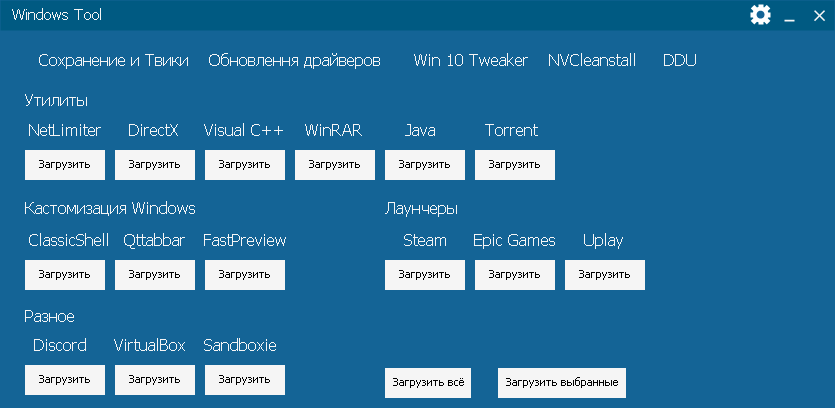

Portable Spotify
Удалил все ненужные языки, только русский оставил.
Отключил всю рекламу (Автор).
Отключена возможность обновления.
Информация:
Отсутствует оффлайн режим и скачивания треков.
Примечание!
Использования блокировки рекламы запрещено политикой Spotify.
Автор не несёт ответственности!
Используйте программу на свой страх и риск.
Portable SiGame
Скачать